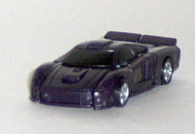
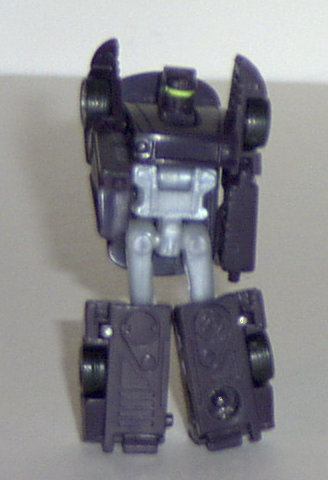
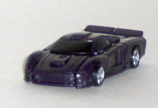
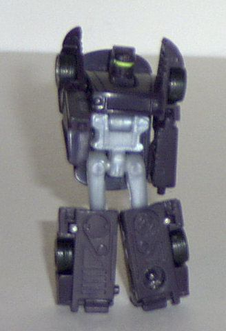
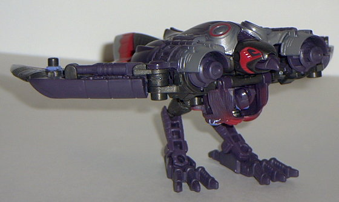
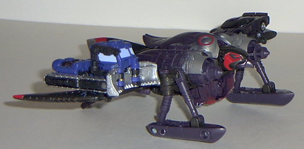
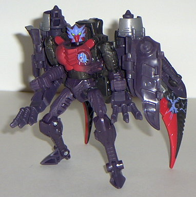

Nightscream
Nightscream
 
Allegiance : Minicon
Size: Mini-Con
Difficulty of Transformation : Very Easy
Color Scheme : Purplish black, light milky gray, black, and some silver and bright greenish yellow
Rating : 8.7
Nightscream


Allegiance
: Minicon
Size:
Mini-Con
Difficulty of Transformation
: Very
Easy
Color Scheme
: Purplish black, light
milky gray, black, and some silver and bright greenish yellow
Rating
: 8.7
(NOTE: Because this is a repaint, this is not a full-blown review. This mainly covers any changes made to the mold and the color scheme, and merely compares it to Oval. For a review on the mold itself, read the review of Oval here .)
This mold looks kickin'
in its new color scheme, that's for sure. As you probably know, I've always
liked almost any "black and..." color schemes, and Nightscream certainly
fits that bill- in this case, black and grey/silver. The vehicle mode looks
especially slick, like it's an illegal street racing vehicle or something.
In robot mode, it still looks great, although this mold still needs as
much paint detailing as ever- it actually gets surprisingly plain in a
few areas,like the feet. A really cool yellow eye visor almost makes up
for it, though.
No mold changes have
been made to Nightscream, but his lower chest tends to stay in the upper
chest pegs much more snugly than on my Oval.
Oval was already a cool
Minicon, but Nightscream is even cooler. One of the best Minicons of them
all- his only real weakness is his lack of good paint detailing. Highly
recommended, especially if you don't already have the Airazor mold that
he's packaged with.
 Airazor
Airazor



Allegiance
: Autobot (at least on
the package...)
Size
: Super-Con
Difficulty of Transformation
: Medium
Color Scheme
: Purplish black, black,
silver, light red, and some white, electric blue, and light green
Powerlinx ports
: 2 (0 gimmicked)
Rating
: 7.8
(NOTE: Because this is a repaint, this is not a full-blown review. This mainly covers any changes made to the mold and the color scheme, and merely compares it to Airazor Transmetal. For a review on the mold itself, read the review of Airazor Transmetal here .)
This form of Airazor
Transmetal is the best of the three color schemes this mold has been through,
in my opinion. Again, I really like "black and..." color schemes, and this
time Airazor is mostly black with some red and silver highlights. One thing
that I don't like, though, is that about half of her "black" is, in fact,
just a very dark purple- not enough where it really contrasts with the
black, but enough where it's noticeable. It doesn't give Airazor enough
color variance in her robot mode, since her arms and legs have no detailing
on them whatsoever. On the upside, though, the red and silver highlights
on the wings and back are awesome, as are the baby blue "electric surge"
patterns. As with the other Armada beasts, Airazor has had her chrome plastic
replaced with regular plastic, and she has Minicon ports molded in- one
in the middle of each wing. What's especially odd, though, is that she
has a DECEPTICON symbol molded under the panels on her back in bird mode...
so what is she, an Autobot or a Decepticon!?
Airazor has a really
nifty color scheme this time around, although I do wish the purple wasn't
so dark so that it could provide more contrast. Excellent electric blue
patterns. Recommended.
No Stats
Review by Beastbot